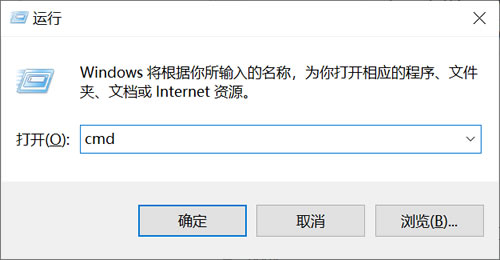
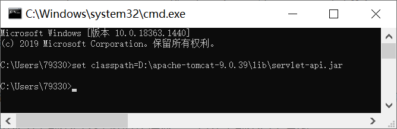
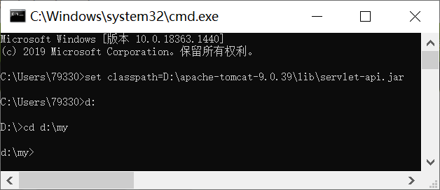
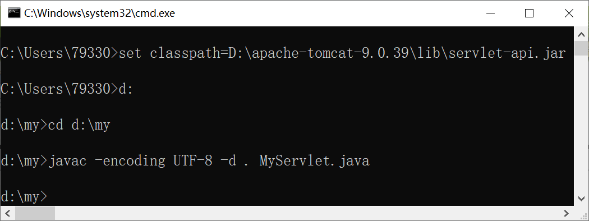
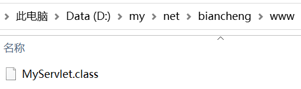
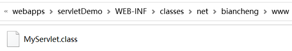
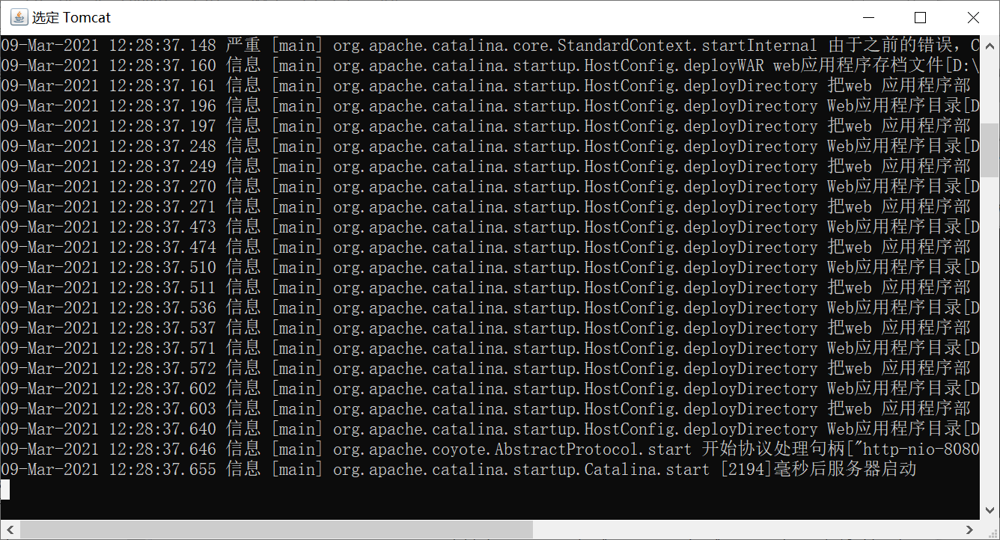

Servlet的部署和访问
Servlet 没有 main() 方法，不能独立运行，但它可以作为 JavaWeb 应用的一个组件被部署到 Servlet 容器中，由容器来实例化和调用 Servlet 的方法，例如：doGet() 、doPost() 等。
那么，JavaWeb 应用是什么呢？Servlet 是如何部署和访问的呢？本节我们将针对这些问题进行讲解。
为了让 Servlet 容器顺利地找到 JavaWeb 应用的各个组件，Servlet 规范规定，JavaWeb 应用必须采用固定的目录结构，即每种组件在 JavaWeb 应用中都有固定的存放目录。
以 Tomcat 为例，通常将 JavaWeb 应用存放到 Tomcat 的 webapps 目录下。在 webapps 下，每一个子目录都是一个独立的 Web 应用，子目录的名字就是 Web 应用的名字，也被称为 Web 应用的上下文根。用户可以通过这个上下文根来访问 JavaWeb 应用中的资源。
webapps 的目录结构如下图。

下表中对 webapps 下各个目录进行了介绍。
Tomcat 既可以运行采用开放式目录结构（只编译不打包）的 Web 应用，也可以运行 Web 应用的打包文件（WAR 文件）。在开发阶段，为了方便程序调试，通常采用开放式的目录结构部署 JavaWeb 应用。在开发完成，进入产品发布阶段时，就应该将整个应用打包成 WAR 文件，再进行部署。
对于初学者来说，为了更加深刻地理解 Servlet 的运行原理和机制，最好的办法就是使用 DOS 命令行进行编译。
使用快捷键 “Windows + R”，打开运行对话框，在对话框输入
使用命令
为了方便操作，可以先在命令行中输入
注：
2）使用
其中：
3）进入 MyServlet.java 文件所在的目录，可发现新增了编译后的目录和 .classes 字节码文件，自此我们就完成了对 Servlet 的编译工作。
web.xml 中各元素含义及用法如下：
Tomcat 启动成功后，在地址栏中输入“http://localhost:8080/servletDemo/MyServlet”，访问 MyServlet，结果如下图。

那么，JavaWeb 应用是什么呢？Servlet 是如何部署和访问的呢？本节我们将针对这些问题进行讲解。
JavaWeb 应用
JavaWeb 应用由一组 Servlet/JSP、HTML 文件、相关 Java 类、以及其他的资源组成，它可以在由各种供应商提供的 Servlet 容器中运行。由 JavaWeb 应用的定义可知， Servlet 是 JavaWeb 应用的一个组件。为了让 Servlet 容器顺利地找到 JavaWeb 应用的各个组件，Servlet 规范规定，JavaWeb 应用必须采用固定的目录结构，即每种组件在 JavaWeb 应用中都有固定的存放目录。
以 Tomcat 为例，通常将 JavaWeb 应用存放到 Tomcat 的 webapps 目录下。在 webapps 下，每一个子目录都是一个独立的 Web 应用，子目录的名字就是 Web 应用的名字，也被称为 Web 应用的上下文根。用户可以通过这个上下文根来访问 JavaWeb 应用中的资源。
webapps 的目录结构如下图。
下表中对 webapps 下各个目录进行了介绍。
| 目录 | 描述 | 是否必需 |
|---|---|---|
| \servletDemo | Web 应用的根目录，属于该 Web 应用的所有资源都存放在这个目录下。 | 是 |
| \servletDemo\WEB-INF | 存放 web.xml、lib 目录以及 classes 目录等。 | 是 |
| \servletDemo\WEB-INF\classes | 存放各种 .class 文件或者包含 .class 文件的目录，Servlet 类的 .class 文件也存放在此。 | 否 |
| \servletDemo\WEB-INF\lib | 存放应用所需的各种 jar 包，例如 JDBC 驱动程序的 jar 包。 | 否 |
| \servletDemo\WEB-INF\web.xml | web.xml 中包含应用程序的配置和部署信息。 | 是 |
部署
在 Tomcat 中部署 JavaWeb 应用最快捷的方式，就是直接将 JavaWeb 应用的所有文件复制到 Tomcat 的 /webapps 目录下。在默认情况下，Tomcat 会自动加载 webapps 目录下的 JavaWeb 应用，并把它发布到名为 localhost 的虚拟主机中。Tomcat 既可以运行采用开放式目录结构（只编译不打包）的 Web 应用，也可以运行 Web 应用的打包文件（WAR 文件）。在开发阶段，为了方便程序调试，通常采用开放式的目录结构部署 JavaWeb 应用。在开发完成，进入产品发布阶段时，就应该将整个应用打包成 WAR 文件，再进行部署。
在本案例中，我们将采用开放式的目录结构进行部署，具体操作步骤如下。即使采用 WAR 文件的形式发布，Tomcat 启动时也会将 WAR 文件自动展开为开放式的目录结构。
1. 进入 Windows DOS 命令行窗口
我们知道，编译 Java 源代码一般可以通过两种方式完成：DOS 命令行 和 IDE（集成开发环境）。使用 IDE 可以一键完成编译工作，十分的方便，但 IDE 给我们带来方便的同时，也隐藏了编译过程中的许多细节，我们无法了解其中的原理和机制。对于初学者来说，为了更加深刻地理解 Servlet 的运行原理和机制，最好的办法就是使用 DOS 命令行进行编译。
使用快捷键 “Windows + R”，打开运行对话框，在对话框输入
cmd，点击“确定”，进入 Windows 系统命令行窗口，如图。

2. 引入 javax.servlet 包
由于 Servlet 是 JavaEE 下的技术标准，不是 JDK 的组成部分，所以在编译 Servlet 前，需要先引入 servlet-api.jar 包（在 Apache Tomcat 安装目录下的 lib 文件夹中提供了此 jar 包）。使用命令
set classpath 可以将 servlet-api.jar 引入，该命令的语法如下，其中 path 表示引入 jar 包的路径。set classpath = path
为了方便操作，可以先在命令行中输入
set classpath=，然后将 servlet-api.jar 文件拖进命令行内，回车执行。

注：
set classpath命令用来为当前窗口设置临时环境变量，只在当前窗口下有效。3. 编译 Servlet
1）在命令提示符中使用cd命令进入 MyServlet.java 所在的目录。

2）使用
javac -encoding UTF-8 -d . MyServlet.java 命令进行编译，若没有报错，则编译成功。

其中：
-
javac：编译命令； -
-encoding UTF-8：用于指定编译源文件时的字符编码，这里指定为 UTF-8； -
javac -d：带包编译 ； -
.：表示当前位置。
3）进入 MyServlet.java 文件所在的目录，可发现新增了编译后的目录和 .classes 字节码文件，自此我们就完成了对 Servlet 的编译工作。

4. 创建目录结构
在完成对 Servlet 的编译后，下一步依照 JavaWeb 应用的固定目录结构，在 Tomcat 中为该 Servlet 创建目录。- 在 Tomcat 的 webapps 目录中创建 servletDemo（web 应用的名字，由自己定义）文件夹；
- 在 servletDemo 文件夹内创建 WEB-INF 文件夹；
- 在 WEB-INF 内创建 classes 文件夹；
- 在 WEB-INF 内创建配置文件 web.xml（可以复制 \webapps\ROOT\WEB-INF 中的 web.xml 使用）。
5. 将 Servlet 移动到 Tomcat 目录中
将编译好的字节码和目录移动到 Tomcat\webapps\servletDemo\WEB-INF\classes 目录下。

6. 配置 web.xml
对 webapps\servletDemo\WEB-INF 目录的 web.xml 中进行配置，具体配置代码如下。
<?xml version="1.0" encoding="UTF-8"?>
<web-app xmlns="http://java.sun.com/xml/ns/javaee"
xmlns:xsi="http://www.w3.org/2001/XMLSchema-instance"
xsi:schemaLocation="http://java.sun.com/xml/ns/javaee
http://java.sun.com/xml/ns/javaee/web-app_3_0.xsd"
version="3.0" metadata-complete="true">
<servlet>
<servlet-name>MyServlet</servlet-name>
<servlet-class>net.biancheng.www.MyServlet</servlet-class>
</servlet>
<servlet-mapping>
<servlet-name>MyServlet</servlet-name>
<url-pattern>/MyServlet</url-pattern>
</servlet-mapping>
</web-app>
web.xml 中各元素含义及用法如下：
- <web-app>： 根元素。
- <servlet> ：用于注册 Servlet，即给 Servlet 起一个独一无二的名字。
- <servlet> 包含两个主要的子元素 <servlet-name> 和 <servlet-class>，分别用于指定 Servlet 的名称和 Servlet 的完整限定名（包名+类名）。
- <servlet-mapping> ：用于定义 Servlet 与 URL 之间的映射。
- <servlet-mapping> 包含两个子元素 <servlet-name> 和 <url-pattern>，分别用于指定 Servlet 的名称和虚拟路径。
访问
进入 Tomcat\bin 目录下双击 startup.bat，启动 Tomcat。

Tomcat 启动成功后，在地址栏中输入“http://localhost:8080/servletDemo/MyServlet”，访问 MyServlet，结果如下图。
访问路径 http://localhost:8080/servletDemo/MyServlet 中，各部分含义如下：
- http:// 表示 HTTP 协议；
- localhost: 表示服务器 IP；
- 8080 表示端口号；
- /servletDemo 表示 Web 应用的上下文根路径；
- /MyServlet 表示资源路径，即 web.xml 中 <url-pattern> 元素的取值。
关注公众号「站长严长生」，在手机上阅读所有教程，随时随地都能学习。内含一款搜索神器，免费下载全网书籍和视频。

微信扫码关注公众号